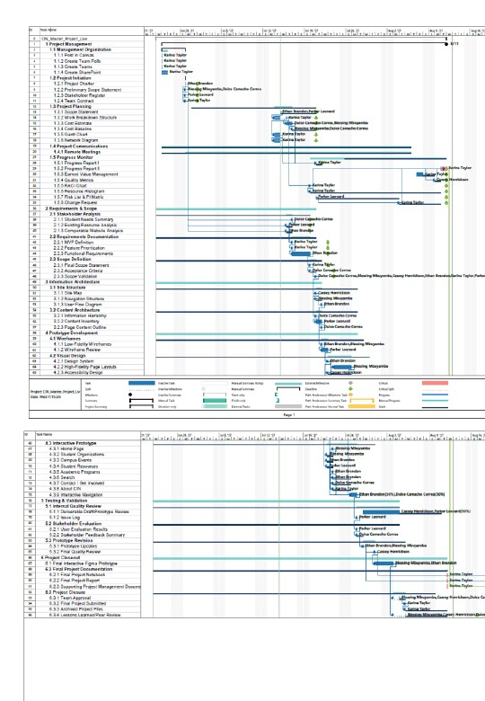

Decompose
Translate scope into a WBS, executable tasks, milestones, dependencies, estimated work, and ownership.
Coordinating a six-person remote technology project from ambiguity through delivery.
CIN was an eight-week student project to plan, design, evaluate, and deliver an interactive prototype for centralized campus-event and organization discovery. I served as project manager, building the project structure around the team while adapting that structure as workload, availability, and our understanding of the work changed.
Students were navigating campus-event and organization information across multiple channels. The team’s proposed response was a centralized involvement-network prototype with event discovery, organization information, and a vetted event-submission workflow.
But the case study I care about professionally is also about the work behind that product: six people, different strengths and schedules, a compressed summer-quarter timeline, a large documentation package, and a prototype that had to move from requirements through information architecture, design, testing, revision, and closeout.
Translate scope into a WBS, executable tasks, milestones, dependencies, estimated work, and ownership.
Use Teams, SharePoint, Planner, meetings, and written updates to keep decisions, files, responsibilities, and next actions visible.
Track actual hours, completion, resource availability, schedule pressure, risks, quality, and cost against the approved plan.
Reassign work, distribute administrative knowledge, refine execution planning, and protect review/integration time when the original plan stops matching reality.
I built the project schedule in Microsoft Project from the approved WBS, connecting task hierarchy, duration, work, dependencies, resources, milestones, and slack. As execution progressed, I learned that some early activities had been decomposed more finely than was useful for management.
Rather than quietly rewriting history, the team retained the original baseline as the approved planning reference while refining the current execution plan. That distinction became important when interpreting later schedule, labor, and EVM variance.
A more detailed schedule is not automatically a better schedule. Decomposition has to improve decision-making, ownership, forecasting, or control.


I created and administered a SharePoint-centered workspace that connected project files, task access, team updates, project pages, and supporting Microsoft 365 tools. Teams handled the communication layer; Planner supported execution; Microsoft Project remained the detailed scheduling and control layer.
The goal was simple: reduce version confusion and make it easier for a teammate to answer What is happening? What do I own? Where is the current information? without relying on the project manager as the only source of truth.
When administrative responsibilities became too concentrated, we expanded backup support and shared more of the project’s operational knowledge.
The lower final labor total should not be read as a simple productivity claim. Part of the variance came from learning that the original WBS had separated work that was more realistically completed as integrated activities. At the same time, my own workload increased substantially as coordination, integration, quality control, and closeout work accumulated. That combination changed how I think about resource planning: total capacity can look favorable while one role is still overloaded.
Structured scope into manageable work and exposed dependencies, milestones, and timing.
Tracked availability, uneven workload, PM overallocation, schedule pressure, and other threats to delivery.
Clarified responsibility, accountability, consultation, and information needs as ownership evolved.
Compared earned progress with the approved labor-cost baseline while documenting the limitations of the original estimate.
Used a formal change request when resource assignments needed to become more flexible and realistic.
Added internal review expectations, definitions of done, and integration/QC time before final submission.
The team’s primary product was the interactive Figma prototype. During the final phase, I built and published a supplemental HTML/CSS/JavaScript demonstration using the project requirements and team design work as inputs. It extends selected workflows into a browser-based artifact for testing and demonstration; it does not replace or re-label the collaborative Figma deliverable.
Team: concept, research, requirements, information architecture, design work, Figma prototype, testing, and project deliverables.
My individual contribution: project management and integration, plus development and publication of the supplemental coded demonstration using team inputs.
The team completed the approved MVP scope and final project package by August 21, 2026. Final labor was estimated at 264.25 hours, compared with the original 329.67-hour baseline. Estimated final labor cost was $8,639.74 against an approved $12,494.33 BAC.
I treat those cost and labor figures as variance against a simulated professional-labor baseline, not as money “saved” for CWU. The project documentation itself notes that some favorable variance resulted from improved estimation and consolidation of overly granular work.
A first draft should be complete enough to review against the requirements, not a collection of unfinished pieces handed to the integrator.
The submission deadline is too late to discover integration problems. Review, revision, formatting, and final quality control need their own time.
Integration and coordination consume real capacity. A project can be under its total labor baseline while still overloading the person connecting everything.
The baseline, change record, risk log, and EVM analysis were most useful when they helped explain why the current project differed from the original plan.
On a similar project, I would begin with fewer, deliverable-oriented work packages; establish primary and backup ownership earlier; define “done” before execution; reserve explicit PM/integration hours; and schedule stakeholder testing sooner so evaluation evidence can influence the prototype before closeout.
The biggest takeaway from CIN is not that the original plan worked perfectly. It is that the project became more manageable as we learned enough to improve the plan without losing the history of how we got there.